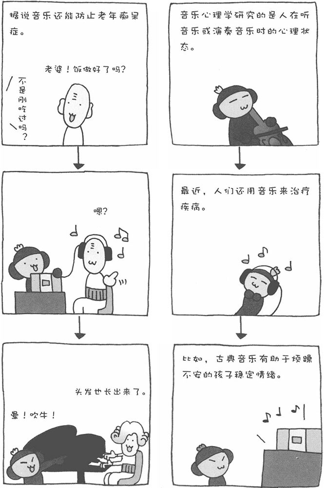

听不同的音乐，心情也会随之产生变化。旋律、节奏、音调不同，音乐对人产成的影响也不同。音乐心理学研究的是人在听音乐或演奏音乐时的心理状态，以及人认知声音的原理等等。近些年来，音乐具有的治疗效果受到社会的广泛关注，对于音乐疗法的研究也取得了长足进步。
■ 常听莫扎特的音乐能变聪明？
1993年，有位美国研究人员发表报告称，给学生听莫扎特的名曲，在短期内他们的考试成绩将有明显提高。这一报告在当时引起了极大的轰动，这一现象被称为"莫扎特效应"。
研究人员称，与其他作曲家的音乐相比，莫扎特的音乐中高频音较多，而高频音具有激发大脑活力的作用。当然，否定这一说法的科学数据也很多。因此，常听莫扎特的音乐是否真能使人变聪明，还是一个谜。某A先生就持否定意见，他曾向世人高呼："听莫扎特音乐的人都是天才吗？这怎么可能？!"
■ 日本人的"绝对音感"
所谓"绝对音感"，是指把耳朵听到的声音用音阶来识别的能力。日本新泻大学的宫崎教授曾对日本大学音乐专业的学生和波兰音乐大学具有"绝对音感"的人进行调查。宫崎教授让接受调查的人做了一个音感测试。结果，日本学生中有30%的回答正确率在90%以上，而波兰人只有12%的回答正确率在90%以上。也许这么简单的一个测试并不足以说明什么问题，但我们推测日本人中具有"绝对音感"的人要比想象中多。
